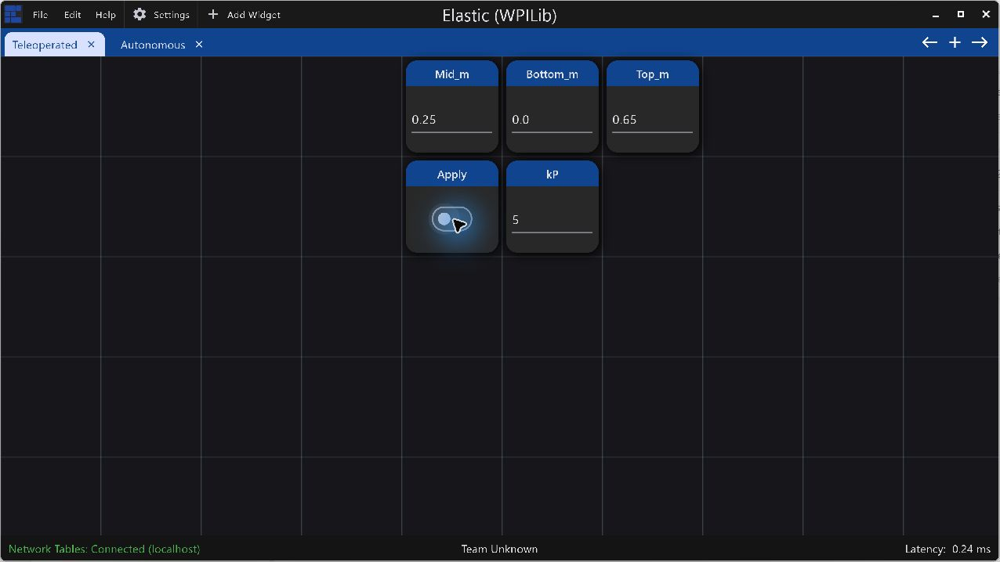

Tune while the simulator runs
Connect and add the gain controls
- Save and run WPILib: Simulate Robot Code. Open Elastic and connect to
127.0.0.1with Target Server: Robot Code. - Click Add Widget. Expand Tunables → your mechanism → Gains.
- Add kP, kD, kG, kV, kA as editable Text Display widgets. Drag Apply onto the dashboard. Right-click its title → Edit Properties. Set Widget Type to Toggle Switch, then click Close.
- Add Telemetry → your mechanism → GainStatus as a read-only Text Display.
- Enter a new gain and press Enter. Turn Apply on. It resets to off; GainStatus should say Applied. If it says Not applied, read the message and correct the value or retry.

Graph destination, profile, and actual
In AdvantageScope add Target_m, ProfileTarget_m, and Actual_m from Telemetry → Elevator to the same Line Graph.
Also add MovementActive. At arrival, the command ends and switches to holding the measured position. Target_m can shift slightly at that moment; evaluate tracking while MovementActive is true.
In AdvantageScope add Target_deg, ProfileTarget_deg, and Actual_deg from Telemetry → Arm to the same Line Graph.
Plot MotorVoltage_V separately. If it reaches ±12 V, more requested output cannot produce more voltage.
Compare Actual with ProfileTarget when judging tracking. A gap between Actual and the final destination during travel is expected.
Try one change at a time
- Start with
kP = 5,kG = 0.28,kV = 2.4,kD = 0,kA = 0. Apply. - Enable Teleoperated with the controller assigned to Joystick[1]. Use A/Y to move between BOTTOM and MID.
- Set kV to
0, Apply, and repeat. Compare Actual with ProfileTarget during motion. Restore2.4. - Try kP at
1, then restore5. Apply and repeat the same movement each time. - At MID, try kG at
0briefly. Watch the holding error, then restore0.28.
- Start with
kP = 45,kG = 0.23,kV = 15,kD = 0,kA = 0. Apply. - Enable Teleoperated with the controller assigned to Joystick[1]. Use X/B to move between LOW and HIGH.
- Set kV to
0, Apply, and repeat. Compare Actual with ProfileTarget during motion. Restore15. - Try kP at
10, then restore45. Apply and repeat the same movement each time. - At HIGH, try kG at
0briefly. Watch the holding error, then restore0.23.
Keep each graph to one or two movements. Change one gain at a time, then restore it before the next experiment.
Try acceleration feedforward and damping
If Actual lags specifically while accelerating, try a small positive kA. Start at 0.01 and compare the same move. Restore zero if it makes tracking worse.
If the mechanism overshoots or rings, try a small positive kD. Start at 0.1. If there is no ringing to fix, zero is a reasonable choice. Do not copy the browser model’s numerical gains.
The robot model has a different motor, gearing, and load from the teaching model. A gain that helps one may not help the other.
Keep your chosen gains
Dashboard values are temporary; Java is the source for the next run. Update both the Tunables.addDouble(...) starting values and the constructor’s config.Slot0 gains to your chosen numbers. Add constructor assignments for kD or kA if you made them nonzero.
Save, restart the simulator, and repeat the same movement. Verify Applied_kP and the other Applied values match. Commit your code in GitHub Desktop and save your Elastic layout.